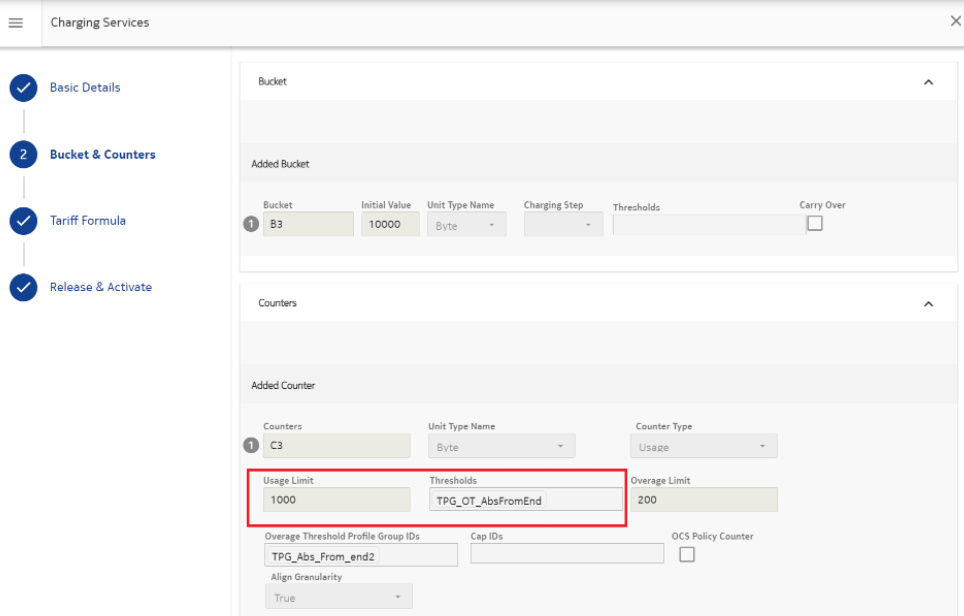

The Absolute from End (ABE) Threshold Profile Group (TPG) configuration for Usage Limit (ULI) can be done as follows.
In the Thresholds entity, configure the following ABE ULI thresholds for Absolute profile:
Name: AbsoluteEndThreshold2 Value: 200 ByteName: AbsoluteEndThreshold3 Value: 300 ByteName: AbsoluteEndThreshold4 Value: 400 ByteName: AbsoluteEndThreshold5 Value: 500 ByteName: AbsoluteEndThreshold6 Value: 600 ByteName: AbsoluteEndThreshold7 Value: 700 ByteName: AbsoluteEndThreshold8 Value: 1000 ByteName: AbsoluteEndThreshold1 Value: 0 ByteFollowing is the Charging Service configuration:
In the preceding TPG configuration, 1000 is the highest threshold and 0 is the lowest threshold. Therefore, 1000 threshold is crossed first and 0 threshold is crossed last. For this, the values are populated in the Threshold Context: ThresholdValue and ThresholdCrossingValue as follows:
When the current value or usage limit in counter instance is updated through REST API, reset of ABE is also done.